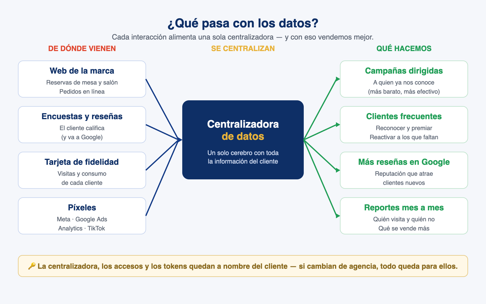

Propuesta para la reunión
El siguiente paso: un ecosistema digital propio
Una web con dominio propio para Don Marino y para Marisquería, donde el cliente reserva, pide y se registra en cada actividad… y nosotros convertimos cada visita en datos para vender más.
Webs de referencia — lo que ya construimos
Ejemplos en vivo de otras marcas, para mostrar el tipo de web y sus funciones.
Registro a una actividad
La gente confirma su asistencia y sus datos caen a una base y a WhatsApp. Justo lo que serviría para las actividades y eventos del local (como los que se organizan en el salón).
Ver ›Control de ingreso
App para el día del evento: lista en vivo, buscador y marcar ingreso, conectada a los mismos datos.
Ver ›
Qué podría hacer el cliente
- Reservar mesa en línea.
- Reservar el salón y espacios para eventos especiales: celebraciones, actividades de índole religioso, familiares y de empresa.
- Registrarse en cada actividad — cada evento suma contactos nuevos.
- Hacer pedidos desde la web.
- Buses y grupos: reservar horarios especiales de llegada.
- Tarjeta de fidelización: acumula beneficios y recolecta datos del cliente.
Por qué importa (el ecosistema de datos)
- Conectamos Píxel de Meta, Google Ads, Google Analytics y TikTok a una sola centralizadora de datos → todo cae en un mismo lugar para medir y dirigir los anuncios (el mismo modelo que ya montamos y funciona).
- Ver mes a mes quién visitó y quién no, para reactivar a los que se enfrían.
- Base de clientes frecuentes para campañas personalizadas.
- Encuesta estilo Subway: el cliente escanea la factura, llena la encuesta y deja su reseña en Google → gana una galleta o una entrada. Ganamos reseñas, interacción y datos.
🔑 Todo queda a nombre del cliente — un plus que las agencias pequeñas no dan
La centralizadora, los accesos y los tokens (Meta, Google Ads, Google Analytics, TikTok y el dominio) quedan a nombre del negocio. Si algún día cambian de agencia —o si dejamos de trabajar juntos— no pierden nada: la siguiente agencia solo toma los accesos y sigue el camino. Los datos y el ecosistema son suyos, no de la agencia.

Esquema para la reunión: de dónde vienen los datos, cómo se centralizan y qué hacemos con ellos.
Costos (solo herramientas — no cobramos mano de obra)
Hosting (VPS) + correos profesionales
$29 / mes · total
Ver ›
Servidor VPS ($21) donde vive todo el ecosistema + correos del dominio, ej. hola@donmarino.cr ($8, lo que cuesta Gmail).
App · Apple Developer
$99 / año
Ver ›
≈ $8,25 / mes. Con esto tenés la app: tarjeta de fidelidad, pedidos y reservas en el teléfono del cliente.
Dominio · Squarespace
≈ $15 / año
Ver ›
La dirección web de cada marca.
Medición centralizada
Gratis · las plataformas
Ver ›
Píxel de Meta + Google Ads + Google Analytics + TikTok conectados a una sola centralizadora de datos.
Importante: en este momento solo se cobra el costo de las herramientas — el desarrollo va por nuestra cuenta. Son pagos que mantienen vivo el ecosistema: unos anuales (dominio, app) y otros mensuales (hosting). Con eso ya montado, mes a mes se puede: centralizar todos los datos (Meta, Google Ads, Analytics y TikTok), ver quién visita, fidelizar con la tarjeta y lanzar campañas dirigidas a los clientes frecuentes.